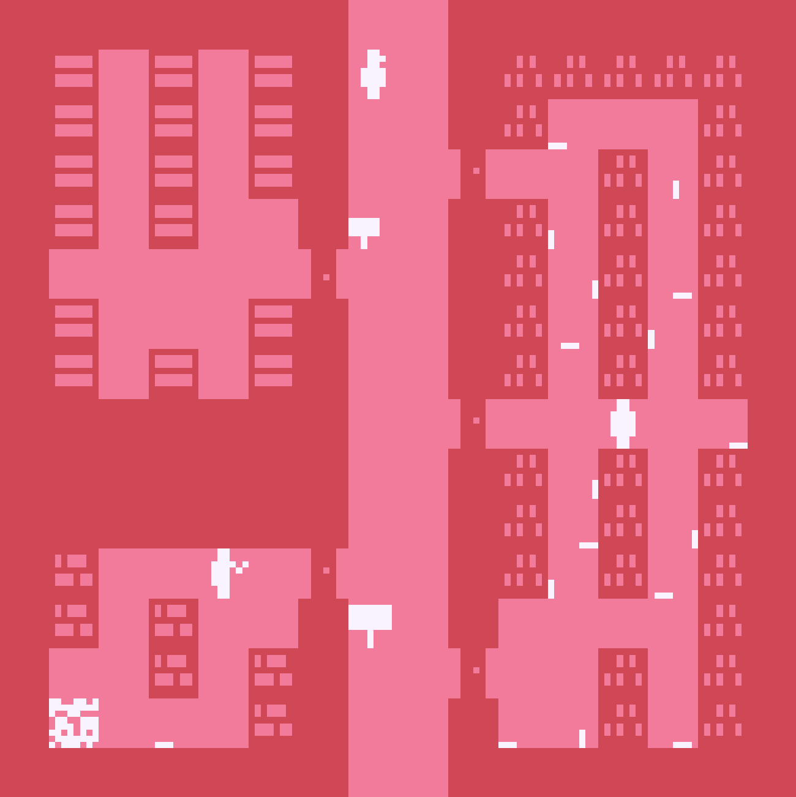
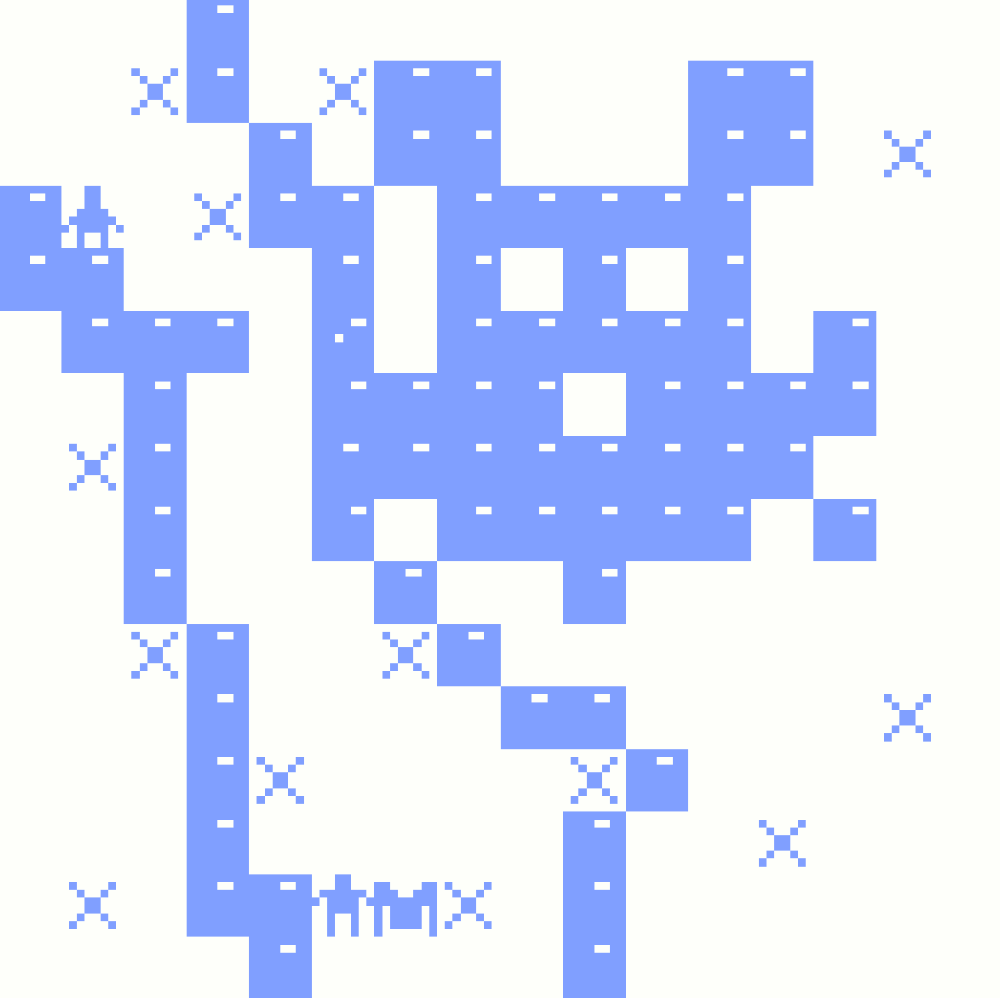

Libreros llenos, vacíos y todo al mismo tiempo
Basado en el artículo de 070 "El costo de cerrar una librería independiente", realizado por Leonardo Bautista Romero.

Diseño y desarrollo: Diego Padilla
Composición sonora: Melissa Ramirez
Videojuegos realizados en el curso Videojuego y Narrativa
Interactiva (prof. Jaime Rodríguez).
Música realizada en el curso Composición para Videojuegos
(prof. Sergio Gutierrez).
Basado en el artículo de 070 "El costo de cerrar una librería independiente", realizado por Leonardo Bautista Romero.

Diseño y desarrollo: Diego Padilla
Composición sonora: Melissa Ramirez
Basado en la entrevista de 070 "Convertirse en leopardo para entenderlo", realizada por David De Salvador.

Diseño y desarrollo: Mariana Carrillo
Composición sonora: Ana María González